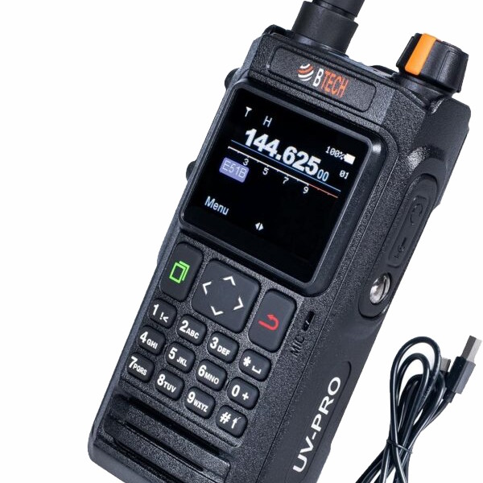
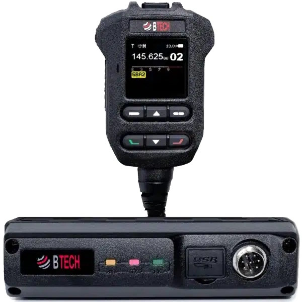
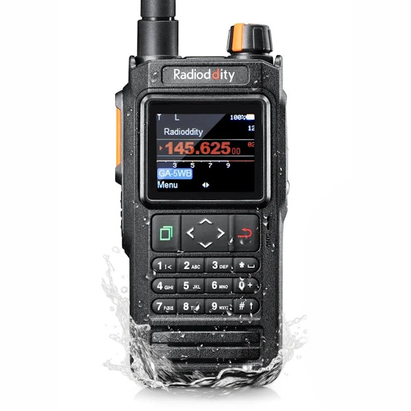
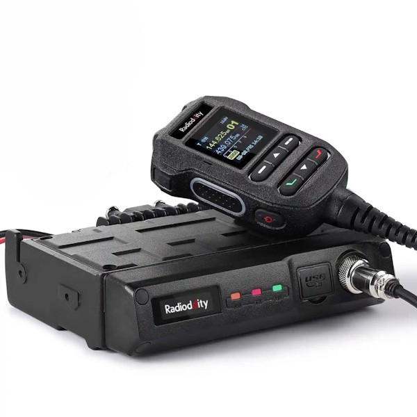
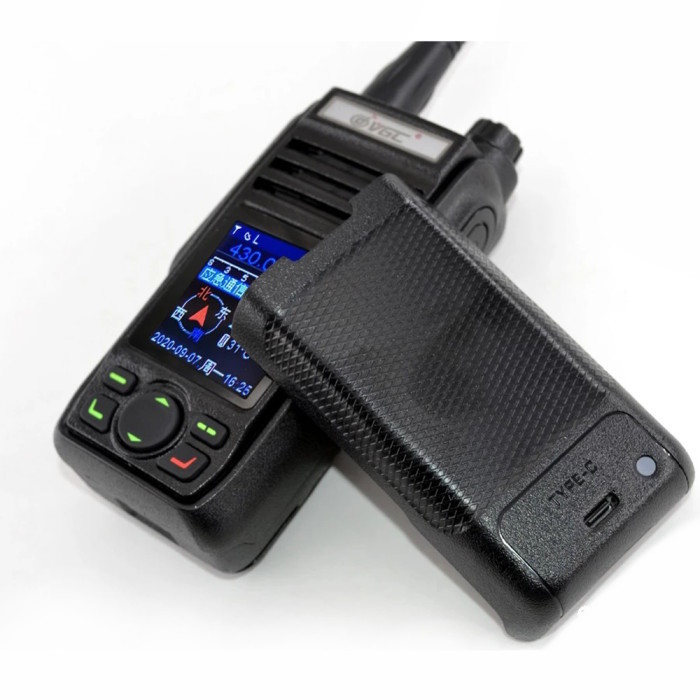
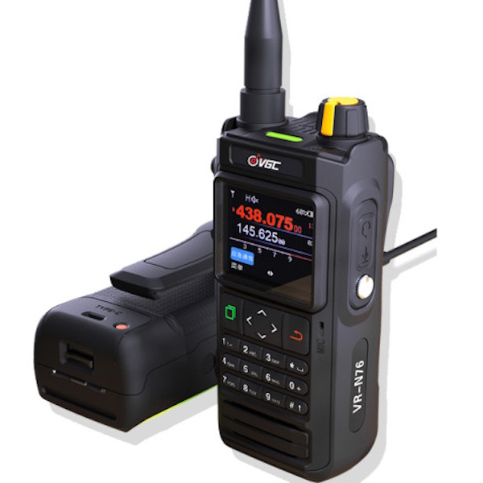
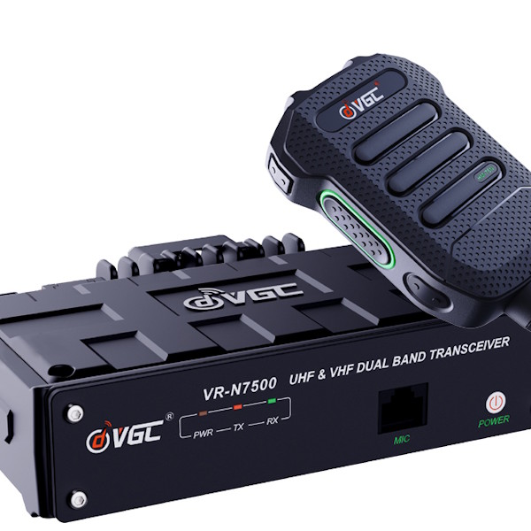
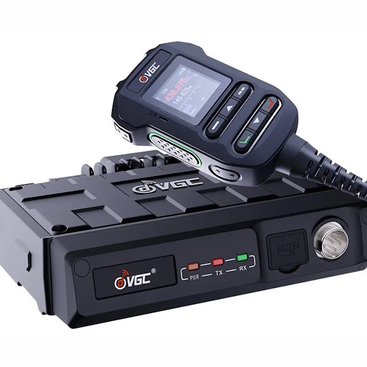
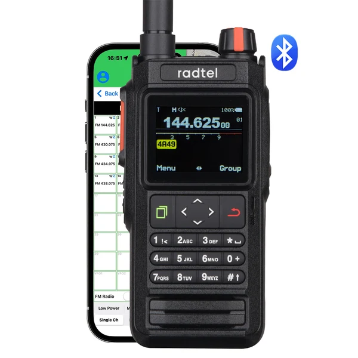

HTCommander 可与一系列基于 Benshi 平台、通过蓝牙连接的手持和车载电台通信。如果你拥有下列任一电台，就可以在 Windows、macOS、Linux、iOS、Android 或网页端上编程信道、运行 APRS 和 Winlink、发送分组等等。发射需持有业余无线电执照。
该系列的旗舰，也是 HTCommander 大部分功能围绕其打造的电台。一款坚固的 IP67 双频 VHF/UHF 手持机，内置 GPS 和 APRS，最高 7 W 输出，配备可拆卸的 2600 mAh 电池并支持 USB-C 充电，具备 NOAA 气象警报和 108–136 MHz AM 航空频段接收。它可在六个频段组中存放 180 个信道，并通过蓝牙提供 KISS TNC，因此 HTCommander 无需单独的电缆或调制解调器即可传输数据。

UV-PRO 的车载版：一款 50 W 双频 VHF/UHF 收发机，支持蓝牙 App 编程、GPS 和 APRS、AI 降噪、卫星追踪工具以及内置 KISS TNC。它将同样的互联工作流带到车辆或基地台。

一款 5 W 双频手持机，具备宽带航空频段接收、内置 GPS 和 APRS、蓝牙编程以及 IP67 防护机身。2600 mAh 电池通过 USB-C 充电，HTCommander 通过蓝牙链路处理信道编程和消息收发。

一款紧凑型 50 W 双频车载电台，配备可拆卸控制面板，适合狭小的安装空间。蓝牙 App 控制、GPS 和 APRS 使它成为 HTCommander 的理想搭配——当你需要比手持机更大功率时。

VGC N 系列的早期型号：一款支持通过蓝牙用智能手机 App 控制的双频 VHF/UHF 手持机。HTCommander 连接它的方式与连接系列中其他电台相同。

一款双频 VHF/UHF 手持机，配备彩色显示屏、完整键盘、蓝牙 App 控制、GPS 和 APRS。它是 VGC 系列中最受欢迎的电台之一，并获 HTCommander 完整支持。

一款支持蓝牙 App 编程和 APRS 的 50 W 双频车载收发机。它通过蓝牙与 HTCommander 配对，可在驾驶座上进行信道编程、消息收发和分组作业。

VGC 当前的 50 W 双频车载电台，内置 App 编程、蓝牙和 APRS。HTCommander 像操控手持机一样驱动其信道和消息收发。

一款拥有 256 个信道和蓝牙连接的双频手持机。它加入了 HTCommander 所支持的 Benshi 平台系列，因此你可以直接在 App 中对其编程和收发消息。

你并不总是需要一台实体电台。HTCommander 还可连接 EchoLink，让你可以通过互联网上线——当你远离手持机或超出射频范围时，这是一个便利的选择。
了解 EchoLink 支持 →